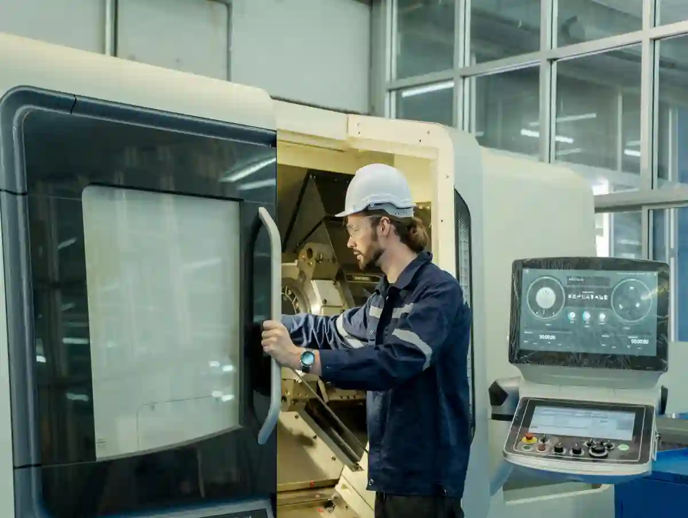
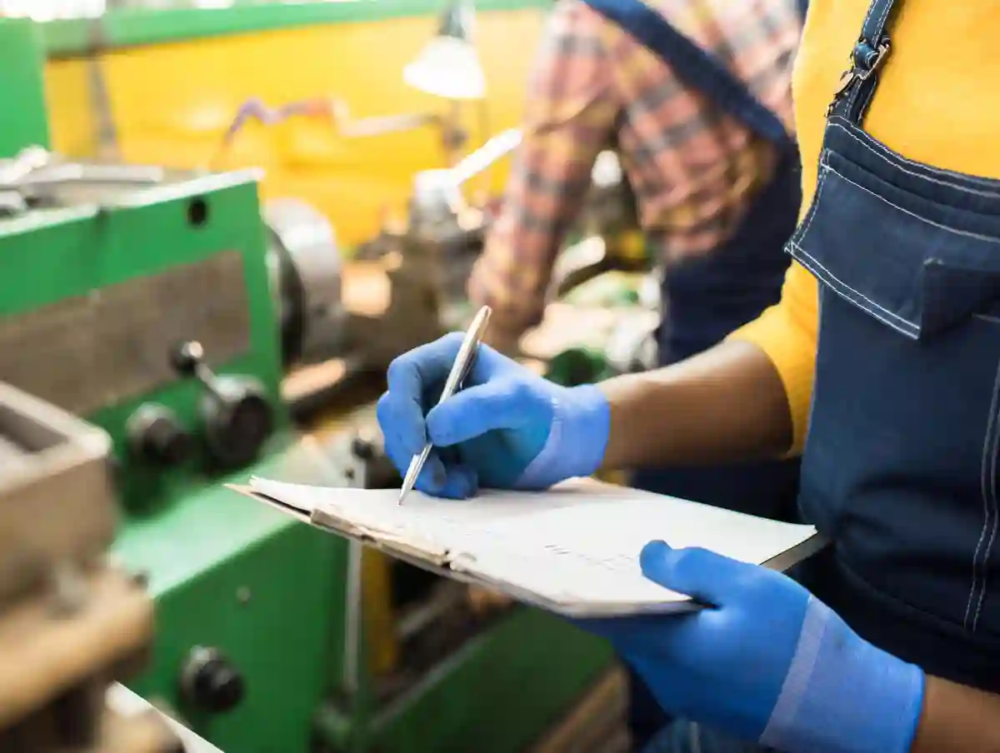
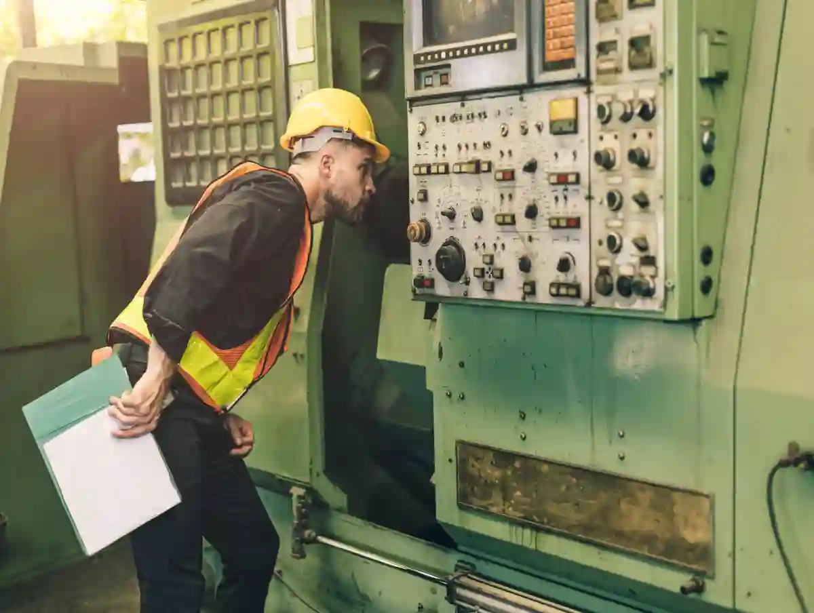

CNC Üretim Teslim Süresi: Termin ve Teslim Yönetimi
CNC projelerinde müşterinin en kritik beklentisi çoğu zaman ölçü kadar “zaman”dır. Çünkü montaj hattı, saha devreye alma tarihi, satın alma planı ve kalite onayı aynı takvimin içine bağlanır. Bu yüzden cnc üretim teslim süresi yönetimi; yalnızca “ne zaman biter?” sorusu değil, üretimin tamamını yöneten bir karar mekanizmasıdır. Sahada sorun genellikle tek bir nedenden çıkmaz: kapasite, işleme sırası, tedarik, fikstür/bağlama ve kalite kontrol aynı anda masaya gelmediğinde cnc üretim teslim süresi tahmini hızla sapar. Bu rehberde, termin disiplinini bozmadan esnekliği koruyan yaklaşımı adım adım kuracağız.
CNC’de termin, yalnızca planlama ekranında görünen bir tarih değildir. Doğru kurulduğunda; tekliften üretime, ölçümden paketlemeye kadar tüm akış “izlenebilir” hâle gelir. Aymaksan’ın entegre üretim yaklaşımında (CNC tornalama/frezeleme, ölçüm, prototip & Ar-Ge ve makine parkı bütünlüğü) işin kritik kısmı, teslim riskini baştan görünür kılmaktır. Bu sayede cnc parça teslim süresi sürpriz değil, yönetilen bir çıktı olur.
Termin Nedir, Teslim Süresinden Farkı Nedir?
Termin çoğu ekipte “müşteriye söz verilen tarih” olarak bilinir; teslim süresi ise işin gerçek akışını ifade eder. Uygulamada termin; iş emrinin hangi gün sevke hazır olacağıdır. Teslim süresi ise; teknik resmin geldiği an ile parçanın sevk edilebilir hâle gelmesi arasındaki toplam “lead time”dır. Bu ayrım netleşmeden üretim termin planlaması doğru oturmaz.

Lead time’ı Oluşturan 5 Ana Blok
Aşağıdaki beş blok, toplam süreyi belirler. Her blok ölçülmezse cnc üretimde gecikme nedenleri konuşulurken hep “genel” kalınır:
- Mühendislik hazırlık (DFM, proses seçimi, CAM)
- Tedarik ve hazırlık (malzeme/sertifika, takım, fikstür)
- İşleme zamanı (setup + çevrim)
- Kontrol/doğrulama (ölçüm, rapor, revizyon)
- Sevk hazırlığı (yüzey işlemi, paketleme, etiket)
Bu çerçeveyle baktığınızda cnc üretim teslim süresi aslında “tek bir süre” değil, yönetilecek 5 ayrı sürenin toplamıdır.
“Hızlı Üretim” ile “Öngörülebilir Üretim” Farkı
Bir işi bazen hızla bitirebilirsiniz; fakat asıl rekabet, süreyi tekrar edilebilir kılmaktır. Özellikle seri/tekrarlı işlerde hedef; cnc üretim teslim süresi için “ortalama” değil, “sapma”yı düşürmektir. Sapma düştüğünde satın alma ekibi güvenle plan yapar; siz de kapasiteyi sakin biçimde yönetirsiniz.
Teslim Süresi Yönetimi CNC’de Neden Zordur?
CNC imalatta süreyi zorlaştıran şey, her parçanın bir “proje” gibi davranabilmesidir. Aynı tezgâhta iki parça aynı anda işlenmez; bağlama değişir, takım değişir, tolerans değişir. Bu yüzden cnc üretim planlama yaklaşımı; sadece “sıraya koyma” değil, değişkenliği yönetme işidir.
Değişkenliği Büyüten Tipik Tetikleyiciler
- Revizyonlu teknik resim (ölçü değişimi, tolerans sıkılaşması)
- Malzeme muadili/sertifika bekleme
- Fikstür ihtiyacı (özellikle ince cidarlı/karmaşık geometri)
- Ölçüm stratejisinin başta tanımlanmaması (ilk parça onayı gecikir)
- Isıl işlem / kaplama gibi dış proseslerin takvime geç eklenmesi
Bu tetikleyicilerin her biri tek başına küçük görünür; fakat birleştiğinde cnc üretimde gecikme nedenleri bir “zincir” hâline gelir. Zinciri kırmanın yolu, süreyi oluşturan blokları ayrı ayrı hedeflemektir.
Doğru Termin Kurgusu İçin “Teklif Öncesi” 6 Soru
Sahada en çok hata, termin sözünü “işi aldıktan sonra” planlamaya çalışınca çıkar. Oysa termin, teklifin bir parçasıdır. Sağlıklı bir termin garantili cnc imalat yaklaşımı için teklif öncesinde şu 6 soruya net yanıt gerekir:
1) Teknik Resim Üretilebilir mi?
Üretilebilirlik (DFM) kontrolü yapılmadan termin verilirse, sonradan gelen revizyonlar cnc üretim teslim süresini sarsar. İlk bakışta “basit” görünen parçalar bile bağlama/ölçüm yüzünden süreyi uzatabilir.
2) Hangi Tezgâh + Hangi Operasyon Sırası?
Operasyon sırası (ön tornalama > ısıl işlem > finisaj gibi) baştan yazılmadığında, iş ortada “dolandırılır” ve süre kayar. Bu noktada tezgâh uygunluğu ve makine parkı kapasitesi belirleyicidir. Aymaksan’da bu karar, entegre park yaklaşımıyla verilir; çünkü işin yalnızca tek operasyonu değil tüm akışı önemlidir. (Makine parkı yapısı için: Makine Parkımız sayfasını inceleyin)
3) Malzeme ve Sertifika Süresi Nedir?
Malzeme tedarik süresi çoğu zaman işleme süresinden uzundur. Bu yüzden cnc parça teslim süresi konuşurken “malzeme hazır mı?” sorusu ilk sırada olmalıdır.
4) Ölçüm Planı Nasıl?
Ölçüm planı net değilse ilk parça onayı uzar; uzadıkça termin kayar. ISO 9001’in proses yaklaşımı ve dokümantasyon vurgusu burada pratik fayda sağlar. Örneğin süreç dokümantasyonunun önemine TSE’nin ISO 9001 sayfasında da vurgu yapılır: TS EN ISO 9001 Kalite Yönetim Sistemi.
5) Dış Proses Var mı?
Isıl işlem/kaplama gibi süreçler ekleniyorsa, termin sözünün içine “dış proses tamponu” konmadan cnc üretim teslim süresi yönetilmez.
6) Kapasite ve Öncelik Kuralı Net mi?
Aynı hafta üç “acil” iş varsa, aslında hiçbir şey acil değildir. Burada kural basittir: öncelik kuralı net değilse plan da net olmaz. Bu nedenle cnc üretim planlama bir “kural seti” ile yürütülmelidir (FIFO, müşteri sınıfı, kritik parça vb.).
Hızlı Kazanım: Termin Sapmasını Düşüren 3 Ölçüm
Bu üç metriği haftalık izlemeyen işletmelerde cnc üretim teslim süresi sürekli “tahmin” olarak kalır:
1) Setup Oranı (Kurulum Payı)
Kurulum payı yükseldikçe termin hassasiyeti düşer. Çözüm; parça aileleriyle planlama ve fikstür standardizasyonudur.
2) İlk Parça Onay Süresi
İlk parça onayı uzuyorsa gecikme “işleme”de değil, doğrulama sürecindedir. Bu, en görünmez ama en pahalı gecikmedir.
3) Rework/Revizyon Frekansı
Revizyon ve tekrar iş oranı yükseldikçe cnc üretimde gecikme nedenleri kronikleşir. Kökte genellikle eksik DFM veya eksik ölçüm planı vardır.
Kapasite ve Darboğaz Yönetimi Olmadan Termin Tutmaz
Birçok işletme cnc üretim teslim süresini “işleme süresi” zannederek plan yapar. Oysa teslim tarihini asıl belirleyen, tezgâhın çevrim dakikası değil darboğazın (bottleneck) haftalık kapasitesidir. Darboğazı doğru yönetmediğinizde, iş emri ne kadar “acil” olursa olsun cnc parça teslim süresi öngörülemez hâle gelir.
CNC’de teslim süresi; darboğaz tezgâh kapasitesi + kurulum süreleri + tedarik + kontrol + dış proses toplamıdır. Bu kalemlerden biri ölçülmezse termin sapması kaçınılmazdır.

Darboğazı 30 Dakikada Bulma Yöntemi
Darboğaz; “en yoğun tezgâh” gibi görünse de bazen ölçüm, fikstür hazırlığı veya dış proses olabilir. Pratik yöntem şudur:
- Son 2 haftanın iş emirlerinde en çok “bekleme” görülen adımı listeleyin.
- Bekleme nedeni “tezgâh dolu” ise kapasite darboğazdır.
- Bekleme nedeni “ilk parça onayı/ölçüm” ise kalite darboğazdır.
- Bekleme nedeni “malzeme/sertifika” ise tedarik darboğazdır.
Bu kısa analiz, cnc üretimde gecikme nedenlerini tartışmayı “tahmin”den çıkarır, veriyle yönetilebilir hâle getirir.
Darboğaz Tezgâhta Kural: “Önce Akış, Sonra Hız”
Darboğaz tezgâhta küçük hız kazanımları yerine akışı korumak daha değerlidir. Örneğin, darboğazda parça ailelerine göre dizilim yapıp kurulumları düşürmek, toplamda cnc üretim teslim süresini tek tek çevrimleri hızlandırmaktan daha çok iyileştirir.
Üretim Termin Planlaması İçin 3 Plan Katmanı
Sağlıklı üretim termin planlaması tek bir çizelge değildir; üç katmanlı düşünmek gerekir:
1) Ana Plan (Haftalık Kapasite Resmi)
Bu katmanda “hangi hafta kaç saat” sorusuna cevap verirsiniz. Hedef; tezgâh bazlı kapasiteyi (vardiya, bakım, operatör, setup) gerçekçi görmek ve termin sözünü burada vermektir.
Kapasiteyi Şişiren En Yaygın Hata: Setup’u Yok Saymak
CNC’de kurulum (setup) çoğu zaman görünmez maliyettir. Kurulum hesaba katılmadığında çizelge kağıt üzerinde güzel görünür, sahada ise termin sapar. Bu durumda “gecikme” değil, en baştan yanlış cnc üretim planlama vardır.
2) Detay Çizelgeleme (Günlük Sıralama)
Günlük çizelgeleme; öncelik kuralını işletir: FIFO mu, teslim tarihi mi, kritik müşteri mi? Burada hedef “her işe başlamak” değil; doğru işe doğru sırada başlayarak cnc parça teslim süresi sapmasını düşürmektir.
3) Kontrol ve Sevk Planı (Son %20)
Çoğu gecikme işleme bittikten sonra yaşanır: ölçüm raporu, yüzey işlemi, paketleme, sevk evrakı… Bu yüzden son adımı ayrı planlamak, termin garantili cnc imalat yaklaşımının kritik parçasıdır.
Termin tutturmak için plan; haftalık kapasite > günlük sıralama > kontrol/sevk şeklinde üç katmanda kurulmalıdır.
Teslim Süresini Uzatan Gizli Kalemler
Cnc üretim teslim süresi konuşulurken genelde malzeme ve tezgâh konuşulur; ama süreyi asıl uzatan “gizli” kalemler şunlardır:
Fikstür/Bağlama Hazırlığı
Karmaşık geometrilerde en pahalı gecikme, doğru bağlama çözümünün geç belirlenmesidir. Bağlama standardı olan işletmeler, aynı toleransta daha kısa cnc parça teslim süresi yakalar.
Ölçüm Stratejisinin Geç Tanımlanması
İlk parça onayı gecikirse, seri işleme “bekler”. Burada çözüm: ölçü kritikliklerini (CTQ) baştan belirlemek ve ölçüm planını iş emriyle birlikte kilitlemektir. Kalite yönetimi ve proses yaklaşımı için TSE’nin ISO 9001 bilgilendirmesi iyi bir referanstır: TS EN ISO 9001 Kalite Yönetim Sistemi.
Dış Proses Tamponunun Unutulması
Isıl işlem/kaplama gibi dış süreçleri “iş bitti” sanıp sonra eklemek, cnc üretimde gecikme nedenleri listesinin klasik maddesidir. Dış proses varsa termin hesabında mutlaka tampon olmalıdır.
Yalın Yaklaşım Termin Sapmasını Nasıl Düşürür?
Yalın üretim, CNC’de “daha hızlı çalışmak” değil; beklemeyi azaltarak akışı iyileştirmektir. KOSGEB’in yalın dönüşüm yaklaşımı da işletmelerde verimlilik artışı hedefiyle bu yönde bir çerçeve sunar: KOSGEB Yalın Dönüşüm yaklaşımı.
Ankara özelinde yalın dönüşüm uygulamalarına dair örnek programlar için ASO Model Fabrika duyuruları da faydalıdır: ASO Model Fabrika “Öğren-Dönüş” programı.
Bu yaklaşımı CNC termin yönetimine çevirdiğimizde; kurulum standardizasyonu, parça aileleriyle çizelgeleme ve WIP (yarı mamul) sınırları, cnc üretim teslim süresi sapmasını sistematik biçimde düşürür.
Gecikme Risk Haritası: Teslim Süresini “Öngörülebilir” Yapan Çekirdek Sistem
Gerçek hayatta cnc üretim teslim süresi nadiren tek bir sebeple uzar; uzama, birbirini tetikleyen küçük risklerin zincire dönüşmesiyle oluşur. Bu yüzden termin yönetiminde ilk iş, “hızlandırma” değil risk haritası çıkarmaktır. Risk haritası; işin teklif aşamasından sevke kadar hangi noktalarda süre sapması yaşanacağını önceden gösteren basit ama çok etkili bir çerçevedir.
CNC’de teslim süresi yönetimi için en hızlı yöntem; malzeme-proses-kapasite-kalite-dış proses başlıklarında risk puanı verip tampon (buffer) tasarlamaktır.

5 Başlıkta Risk Puanlama (0–3) – Pratik Şablon
Her yeni iş için aşağıdaki 5 başlığa 0–3 arası puan verin (0=risksiz, 3=yüksek risk). Toplam puan, termin sözünüzün “tampon” ihtiyacını belirler.
- Malzeme riski: sertifika, muadil, tedarik süresi belirsizliği
- Proses riski: yeni operasyon, 5 eksen/karmaşık bağlama, hassas tolerans
- Kapasite riski: darboğaz tezgâhta yoğunluk, vardiya/operatör bağımlılığı
- Kalite riski: CTQ ölçüler, rapor beklentisi, ilk parça onayı ihtimali
- Dış proses riski: ısıl işlem/kaplama/taşlama vb. dış kaynak bağımlılığı
Bu tabloyu kullanınca cnc üretimde gecikme nedenleri “hissettiğiniz” değil, “ölçtüğünüz” şeye dönüşür. Sonuç: cnc parça teslim süresi tahmini hem daha gerçekçi olur hem de müşteriye güvenli bir termin taahhüdü verirsiniz.
Risk Puanına Göre Basit Termin Kuralı
- Toplam 0-4: Standart termin (minimum tampon)
- Toplam 5-9: Kontrollü termin (operasyon bazlı tampon)
- Toplam 10-15: Korunaklı termin (malzeme + kalite + dış proses tamponu şart)
Termin Garantili CNC İmalat Mantığı: “Tampon”u Doğru Yere Koymak
Birçok ekip tamponu tek bir yere yığar: “+3 gün güvenlik ekleyelim.” Bu yaklaşım bazen işe yarar, bazen de rekabeti düşürür. termin garantili cnc imalat için doğru yaklaşım; tamponu riskin olduğu adımın yanına koymaktır. Böylece cnc üretim teslim süresi uzamadan güvenli hâle gelir.
3 Tip Tampon (Buffer) – CNC’ye Uyarlanmış Hali
- Malzeme tamponu: malzeme/sertifika belirsizliğini absorbe eder.
- Kalite tamponu: ilk parça onayı + ölçüm raporu + revizyon ihtimalini absorbe eder.
- Dış proses tamponu: dış kaynak süreçlerinin (ısıl işlem/kaplama) süre oynaklığını absorbe eder.
Buradaki kritik nokta: Tampon “boş gün” değildir; yönetilecek risk alanıdır. Tamponu yönetmek, cnc üretim planlama disiplininin bir parçasıdır.
Lead Time Oynaklığı Neden Stok/İş Yükü Patlatır?
Teslim süresi oynaklığı; yarı mamul (WIP) artışına, acil işlere ve planın sürekli bozulmasına yol açar. Tedarik zinciri perspektifinden teslim süresi oynaklığının etkilerini ve kontrol yaklaşımını özetleyen bir kaynak: teslim süresi oynaklığını kontrol etme.
Bu bakış CNC’ye uyarlanırsa mesaj nettir: oynaklık büyüdükçe cnc parça teslim süresi “ortalama” ile değil, “en kötü senaryo” ile planlanır ve terminler şişer.
Teklif Aşamasında Süre Tahmini: CPM/PERT Mantığını CNC’ye Uyarlama
CNC’de termin tahmini, yalnızca tezgâh çevrim dakika hesabı değildir; bağımlı adımların ağıdır. İşte burada proje yönetiminde kullanılan CPM/PERT yaklaşımı pratik fayda sağlar: adımları ağ gibi düşünür, kritik yolu görürsünüz. İTÜ’nün CPM/PERT ders notları bu yaklaşımı net biçimde anlatır: CPM/PERT proje yönetimi ders notu.
CNC için “Kritik Yol” Nedir?
Kritik yol; termin tarihini belirleyen en uzun bağımlı adımlar zinciridir. Örnek zincir:
Malzeme > fikstür/bağlama > kaba işleme > ısıl işlem > finisaj > ölçüm/rapor > paketleme/sevk
Bu zincirde bir adımı hızlandırmak, kritik yol üzerindeyse cnc üretim teslim süresini düşürür; kritik yol üzerinde değilse sadece “yerel verim” sağlar, termin değişmeyebilir.
3 Zaman Tahminiyle Gerçekçi Termin (PERT Mantığı)
Her adım için 3 tahmin yapın:
- İyimser (O), En olası (M), Kötümser (P)
Sonra adım süresini “tek sayı”ya indirip termin hesabını güvenli kurarsınız. Bu, özellikle üretim termin planlaması yaparken “riskli” adımlarda dramatik fayda sağlar.
Ankara Üniversitesi açık ders kaynağındaki CPM içeriği de yöntem mantığını özetler: Kritik Yol Metodu (CPM) ders sunusu.
Değişiklik Yönetimi: Revizyon Geldiğinde Termin Nasıl Korunur?
Revizyonlar kaçınılmazdır; sorun revizyonun kendisi değil, revizyonun “akışa” nasıl girdiğidir. Revizyonu kontrol altına alamayan işletmelerde cnc üretimde gecikme nedenleri tekrar eder ve her iş “acil”e dönüşür.
24 Saat Kuralı: Revizyonu Tek Noktadan İçeri Almak
Revizyon geldiğinde 24 saat içinde şu üç karar netleşmeli:
- Proses değişiyor mu? (operasyon sayısı/sırası)
- Ölçüm planı değişiyor mu? (CTQ ölçüler, rapor formatı)
- Malzeme değişiyor mu? (sertifika/tedarik etkisi)
Bu üç karar netleşmeden çizelgeyi güncellerseniz, cnc üretim planlama “sürekli yeniden planlama”ya döner. Bu da doğrudan cnc üretim teslim süresi sapması demektir.
“Dondurma Noktası” (Freeze) Olmadan Termin Tutmaz
Özellikle seri/tekrarlı işlerde, belirli bir aşamadan sonra değişiklik kabul etmeyeceğiniz bir “freeze” noktası belirlemek gerekir (ör. CAM onayı sonrası). Bu netlik, termin garantili cnc imalat vaadini gerçekçi kılar.
Yalın Yetkinlik ve Termin Disiplini: Öğren-Dönüş Yaklaşımı Neden İşe Yarar?
Termin yönetimi, sadece planlama departmanının işi değildir; sahada yalın yetkinlik oluşmadan sürdürülemez. Model Fabrika yaklaşımı, işletmelerin yalın yetkinlik geliştirerek verimlilik/akış iyileştirmesini hedefler: Öğren & Dönüş Programı. Bu yaklaşım CNC’ye uygulandığında; kurulum standardizasyonu, değer akışı bakışı ve pilot alan iyileştirmeleriyle cnc parça teslim süresi sapması düşer, termin güvenilirliği artar.
Plan Sahada Neden Bozulur? “Acil İş” Yönetilmezse Teslim Süresi Dağılır
Teoride çizelge kusursuz görünür; pratikte ise planı bozan şey çoğu zaman “tek büyük hata” değil, gün içinde biriken küçük sapmalardır. Bu sapmalar yönetilmediğinde cnc üretim teslim süresi hızla “tahmine” döner; cnc parça teslim süresi ise müşterinin gözünde güvenilirliğini kaybeder. Bu bölümde, planı sahada en sık bozan 6 durumu ve her biri için uygulanabilir önlemleri netleştireceğiz.
Planın bozulma nedeni genellikle acil iş yükü, kurulum karmaşası, WIP şişmesi, ölçüm/onay gecikmesi, dış proses bekleme ve revizyon akışının kontrolsüzlüğüdür. Çözüm; WIP limiti + net öncelik kuralı + kalite akışı + tampon yönetimidir.

1) “Her İşe Biraz Başlamak” (WIP Şişmesi)
CNC’de en pahalı alışkanlık, çok sayıda işi aynı anda açmaktır. Yarı mamul (WIP) şiştiğinde:
- Kurulum sayısı artar,
- Parça arama/taşıma artar,
- Ölçüm kuyruğu büyür,
- En sonunda cnc üretimde gecikme nedenleri zincir hâline gelir.
WIP Limiti Kuralı (Basit ama sert)
Her tezgâh/hat için aynı anda açık iş emri sayısını sınırlandırın. “Yeni işe başlama” kriteri, mevcut işin kontrol/rapor adımına girmesi olsun. Bu tek kural bile cnc üretim planlama disiplinini görünür şekilde iyileştirir.
Acil İş Yönetimi: Termin Tutmanın “Gizli” Operasyon Prosedürü
Acil işler her tesiste vardır. Sorun; acil işin kendisi değil, acil işin hangi kuralla sisteme girdiğidir. Kuralsız acil yönetimi, üretim termin planlamasını sürekli “yeniden planlama”ya iter.
2-Kademeli Acil Kuralı (Saha Standardı)
- Acil kapısı (Gate): Acil etiketi sadece belirli kişilerce verilir (satın alma/proje lideri + üretim sorumlusu).
- Yer açma kuralı: Acil iş girdiğinde, sistemden aynı süre/kapasiteyi çıkaracak bir iş “beklemeye” alınır. Aksi hâlde acil iş, sadece iş yükünü şişirir.
Bu yaklaşım, “her şey acil” kaosunu keser ve termin garantili cnc imalat mantığını fiilen mümkün kılar.
Acil İşte En Doğru Soru: “Kritik Yol Nerede?”
Acil işi hızlandırmak için her adımı hızlandırmaya çalışmak yerine, kritik yolda olan adımı hızlandırın (malzeme mi, tezgâh mı, ölçüm mü, dış proses mi?). Böyle yaptığınızda hem cnc üretim teslim süresi kısalır hem de diğer işler gereksiz bozulmaz.
Kurulum (Setup) Kaosu: Teslim Süresini Sessizce Uzatan 3 Hata
Kurulum, CNC’nin zaman hırsızıdır. Çevrim süresi düşse bile kurulum kontrolsüzse cnc parça teslim süresi kısalmaz.
Hata 1) Parça Ailesi Mantığı Olmadan Çizelgeleme
Aynı tezgâhta benzer bağlama/takım seti isteyen parçaları ardışık planlamak, kurulumları dramatik düşürür. Bu, sahada “en hızlı” iyileştirmelerden biridir.
Hata 2) Takım ve Fikstür Hazırlığı Tezgâhı Bekletir
Takım seti ve fikstür tezgâhta hazırlanıyorsa, tezgâh aslında üretmiyordur. Tezgâhı bekleten bu gizli kayıp, cnc üretim teslim süresi hesabında çoğu zaman görünmez kalır.
Hata 3) İlk Parça Onayı Kurulumdan Kopuktur
Kurulum bittiği hâlde ölçüm planı hazır değilse; “kurulum tamam” demek bir anlam ifade etmez. Kurulumu bitmiş iş, onay beklerken sırayı kilitler ve cnc üretimde gecikme nedenleri tekrar eder.
Ölçüm ve Kalite Akışı: “Son Kontrol” Değil, Termin Güvencesi
Termin yönetimi sadece üretimin işi değildir; ölçüm/kalite akışı termin güvenilirliğinin bel kemiğidir. Kalite adımı doğru kurgulanmazsa, işleme biter ama sevk edilemez; sonuçta cnc üretim teslim süresi uzar.
2-Nokta Kontrol Standardı (CTQ odaklı)
- İlk parça onayı: Kritik ölçüler (CTQ) baştan kilitlenir.
- Final kontrol: Sadece rapor gerektiren ölçüler tekrar doğrulanır.
Bu standardın faydası şudur: Ölçüm kuyruğunu gereksiz yere şişirmez, ama müşteri güvenini de zedelemez. ISO yaklaşımında izleme-ölçme ve süreç kontrolünün kaliteye etkisi, TSE’nin ISO 9001 bilgilendirmesinde de vurgulanır. TS EN ISO 9001 Kalite Yönetim Sistemi.
Ölçüm Darboğazını 3 Adımda Rahatlatma
- CTQ listesiyle “ölçü kapsamını” daraltın.
- Rapor formatını teklif aşamasında netleştirin.
- Ölçüm sırasını “teslim tarihi yakınlığı”na göre yönetin (FIFO değil, due-date).
Bu üç adım, üretim termin planlaması ile kaliteyi aynı çizgide buluşturur.
Dış Proses ve Tedarik Beklemeleri: Termin Sapmasının “Dış Kaynak” Kökü
Isıl işlem, kaplama, taşlama gibi dış prosesler ile malzeme/sertifika beklemeleri; içeride mükemmel plan yapsanız bile süreyi oynatabilir. Burada amaç “tamponu büyütmek” değil, dış bağımlılıkları yönetilebilir hâle getirmektir.
Dış Proseste 3 Kural
- Teslim gününü değil, alım gününü planlayın (ne zaman geri gelecek?).
- Her dış proses için standart “min-maks süre bandı” oluşturun.
- Risk puanı yüksek işlerde dış proses başlamadan “ön onay” alın.
Bu yaklaşım, cnc üretim planlama disiplinini dış süreçlere taşır ve cnc üretimde gecikme nedenlerinin en zor kalemini kontrol altına alır.
Sahada Ölçülebilir KPI Seti: Termin Sapmasını İzlemek İçin 6 Gösterge
Termin yönetimi konuşulup ölçülmüyorsa, iki hafta sonra aynı sorun geri gelir. Aşağıdaki KPI seti, cnc üretim teslim süresi yönetimini “saha rutini” hâline getirir:
Zorunlu 6 KPI
- Termin sapması (gün) — iş emri bazında
- WIP (açık iş emri sayısı) — tezgâh bazında
- Setup oranı — toplam süre içinde %
- İlk parça onay süresi — dakika/saat
- Rework oranı — adet/iş emri
- Dış proses gecikme oranı — planlanan vs gerçekleşen
Model Fabrika yaklaşımının yalın ve verimlilik odağı, işletmelerde bu tür ölç-iyileştir döngülerinin önemini vurgular: Sanayi ve Teknoloji Bakanlığı – Model Fabrika.
Müşteriyle Termin İletişimi: Söz Verme Değil, “Termin Şartnamesi” Oluşturma
CNC projelerinde en çok gerilim yaratan konu, “termin” kelimesinin herkes için farklı anlam taşımasıdır. Satın alma ekibi takvime bakar, mühendislik ekipleri revizyon konuşur, üretim ise kapasiteyle boğuşur. Bu yüzden cnc üretim teslim süresi yönetiminde hedef; tek bir tarih söylemek değil, teslimi belirleyen şartları net bir çerçeveye oturtmaktır. Bu çerçeveye pratikte “termin şartnamesi” diyebilirsiniz.
Termin şartnamesi; resim revizyon kuralı + malzeme/sertifika sorumluluğu + ölçüm/rapor kapsamı + dış proses bandı + kabul kriterleri maddeleriyle cnc parça teslim süresi riskini düşürür.
Termin Şartnamesinde 6 Madde (Kopyala-Uygula)
- Teknik resim revizyon kuralı (hangi aşamadan sonra değişmez?)
- Malzeme ve sertifika temin sorumluluğu (kim, ne zaman?)
- Ölçüm/rapor formatı (CTQ listesi, rapor tipi, kabul kriteri)
- Dış proses (varsa) min-maks süre bandı
- Kısmi sevk (part-shipment) şartı (mümkün mü, nasıl?)
- Kabul/ret ve rework kuralı (rework termin etkisi nasıl yönetilir?)
Bu maddeler yazılı değilse, üretimde en iyi planı yapsanız bile cnc üretimde gecikme nedenleri “iletişim kaynaklı” tekrar eder ve cnc üretim planlama sürekli revize olur.
Kısmi Sevk Stratejisi: Teslim Süresini Kısaltmanın En Gerçekçi Yolu
Kısmi sevk, özellikle çok operasyonlu veya dış prosesli işlerde termin riskini azaltır. Burada kritik nokta; müşterinin montaj/deneme ihtiyacını anlamak ve parçayı “paket” mantığıyla bölmektir.
Kısmi Sevk Ne Zaman Mantıklı?
- Montajın erken başlayabildiği projelerde
- İlk parça onayı gereken işlerde
- Dış proses beklemesinin yüksek olduğu setlerde
- Revizyon ihtimali yüksek prototip/Ar-Ge parçalarında
Bu yaklaşım, tek bir büyük “bitmiş ürün” yerine kontrollü teslimatlar yaratır; böylece cnc parça teslim süresi kısalır ve cnc üretim teslim süresi sapması düşer.
Kısmi Sevk İçin Minimum Disiplin
- Her paket için ayrı CTQ listesi
- Paket bazlı iş emri kapanış kriteri
- Sevk-ölçüm-etiket standardı
Kısmi Sevk Stratejisi: Teslim Süresini Kısaltmanın En Gerçekçi Yolu
“Termin garantisi” ifadesi, ölçülebilir tanım yoksa pazarlama cümlesi olarak kalır. termin garantili cnc imalat yaklaşımında hedef; termin performansını ölçmek ve sapmayı sistematik olarak azaltmaktır.
3 Seviyeli Termin Taahhüdü
- Standart termin: Düşük riskli işler (risk puanı 0–4)
- Kontrollü termin: Orta riskli işler (5–9) — operasyon tamponlu
- Korunaklı termin: Yüksek risk (10–15) — malzeme + kalite + dış proses tamponlu
Bu sınıflandırma, üretim termin planlamasını müşteriye anlatmayı kolaylaştırır: “Termin uzadı” yerine “riski yönetmek için hangi tampon devreye girdi?” sorusunu konuşturur.
Örnek Termin Hesabı Mantığı: Kritik Yol + Tampon + Onay Kapıları
CNC termin hesabını sahada çalışır hâle getiren en pratik yöntem; işi ağ mantığıyla görmek ve kritik yolu takip etmektir. Bu yaklaşım proje yönetiminde CPM/PERT ile bilinir. İTÜ’nün proje yönetimi ders notları, işlerin planlanması-uygulanması-kontrol edilmesi çerçevesini net biçimde açıklar.
CNC için “Onay Kapıları” (Gating)
- Kapı 1: DFM/proses onayı (iş emri açılmadan)
- Kapı 2: CAM + takım/fikstür hazır (tezgâha girmeden)
- Kapı 3: İlk parça onayı (seri işleme geçmeden)
- Kapı 4: Final kontrol + sevk (paket kapanışı)
Bu kapılar belirlenirse; revizyon veya acil iş geldiğinde hangi kapıda olduğunuz net olur. Böylece cnc üretimde gecikme nedenleri “sürpriz” değil, yönetilen olay hâline gelir; cnc üretim teslim süresi tahmini daha stabil olur.
PERT Mantığıyla Riskli Adımları Güvenli Yapmak
Ankara Üniversitesi açık ders içeriği, CPM/PERT’in çizelgeleme faaliyetlerine analitik anlam kazandırmak için kullanıldığını vurgular. CNC’de bu yaklaşımın pratik karşılığı şudur: riskli adımın iyimser-olası-kötümser süre bandını bilerek tamponu o adımın yanına koyarsınız. Sonuç: cnc üretim planlama daha gerçekçi; cnc üretim teslim süresi daha güvenilir.
Aymaksan Yaklaşımıyla Termin Yönetimi: Entegre Park + Ölçüm + Prototip Desteği
Termin yönetiminde en büyük avantaj, süreçleri tek bir akışta toplayabilmektir: tornalama/frezeleme, ölçüm-kontrol ve gerektiğinde prototip/Ar-Ge desteğinin aynı plan mantığıyla ilerlemesi. Aymaksan’da hizmet kırılımları (ör. CNC tornalama, frezeleme/dik işleme, kalite kontrol & ölçüm, prototip & Ar-Ge) menü yapısında da net biçimde ayrıştırılmış durumda.
Makine parkı sayfası da kapasite ve tezgâh uygunluğu konuşmalarında “somut” referans sağlar.
Bu altyapı, termin taahhüdünü yalnızca “takvim” değil, “kapasite + kalite + proses” toplamı olarak yönetmenizi kolaylaştırır. Böylece cnc parça teslim süresi yalnız hızla değil, süreç güvenilirliğiyle iyileşir.
Kapanış: Teslim Süresini Kısaltan “Doğru Soru Seti”
Sahada termin yönetimi, çoğu zaman doğru soruyu sormakla başlar. Aşağıdaki soru setini rutin hâline getirdiğinizde cnc üretim teslim süresi yönetimi refleks olur:
Her İş Emri için 8 Soru
- Bu işin kritik yolu hangi adım?
- Malzeme ve sertifika hazır mı, değilse tarih net mi?
- Fikstür/bağlama hazır mı?
- Ölçüm planı ve CTQ listesi kilitlendi mi?
- İlk parça onayı için kim, ne zaman hazır?
- Dış proses var mı, min-maks bandı planlandı mı?
- Kısmi sevk mümkün mü?
- Revizyon “freeze” noktası belirlendi mi?
Bu 8 sorunun çoğuna “evet” diyebiliyorsanız, üretim termin planlaması güçlüdür; cnc üretimde gecikme nedenleri azalır; cnc üretim planlama daha sakin ilerler.
Bu yazı için şu yazı ve sayfaların sizin için faydalı olacağını düşünüyoruz;
İç Kaynaklar
- Üst kategori CNC İmalat Rehberi
- “Plan katmanları” bölümünde süreç yaklaşımını daha iyi anlamak ve Talaşlı imalat akışında operasyon bağımlılıklarını görmek için ilgili blog 1: CNC Üretim Süreçleri Nasıl Planlanır?
- Talaşlı imalat akışını detaylı anlamak ve Operasyon bağımlılıklarını talaşlı imalat akışında görmek için ilgili blog 2: Talaşlı İmalat Süreçleri Nasıl Planlanır?
- Kapasite/tezgâh uygunluğu için: Makine Parkı